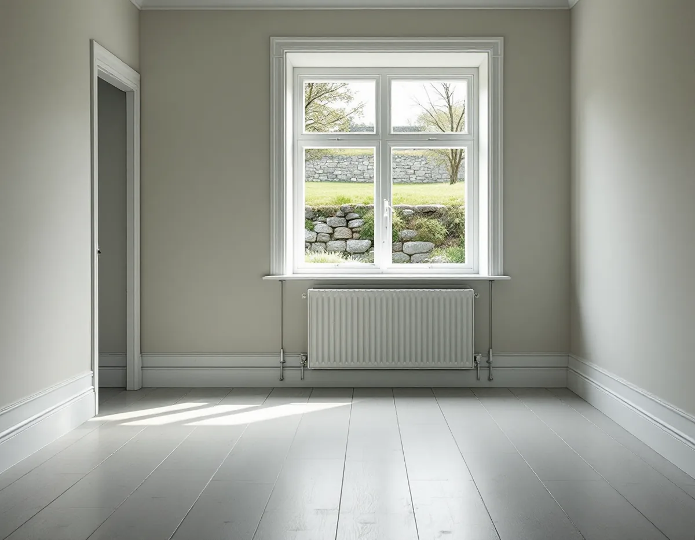
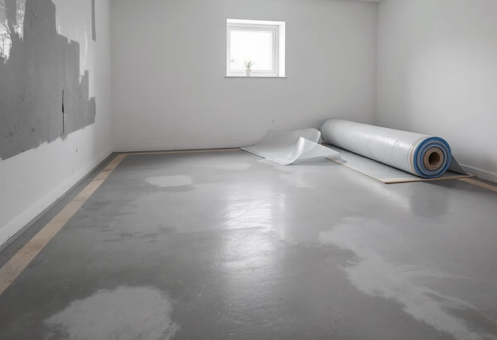

Platsbesök
Vi tittar på väggar, golv och lukt och frågar hur källaren har använts.
När en källare eller ett nedre plan i suterräng ska bli sovrum, gästrum eller arbetsrum är golvet den känsligaste delen. Det ligger närmast marken, och fukten därifrån slutar inte. Geal Entreprenad AB lägger golv och slipar trägolv i villor i Hägersten, och på en sådan våning börjar vi med att ta reda på hur grunden är byggd.

I stadens vägledning Varsam utveckling av småhus- och villaområden räknas Mälarhöjden till villastäderna. Där beskrivs de första stadsplanerna med ett slingrande nät av smala gator som följde terrängen, och friliggande hus i trädgård. I vägledningens tabell är Mälarhöjden markerad som kulturhistoriskt värdefull miljö och som ett område med detaljplaner med generösa byggrätter.
Villastäderna var enligt vägledningen privat organiserade, och husen är individuellt utformade, med trä som dominerande fasadmaterial. Enligt områdesfakta för 2025 har Mälarhöjden 1 507 bostäder, och 1 086 av dem ligger i småhus. Har huset en källare eller en våning i suterräng kan den bli bostadsyta, och då är golvet det första vi tittar på.

Boverket skriver att källare ofta drabbas av fuktskador, och att källaren både ska skydda huset mot fukt från marken och fungera som bostads- eller lagringsutrymme. Äldre hus hade enligt myndigheten ofta oisolerade och ouppvärmda källare. Det fanns spår av fukt, men eftersom det inte fanns organiskt material uppstod det sällan skador. När källaren börjar användas som bostad ökar fukttillskottet, ventilationen är inte anpassad för det och fler känsliga material hamnar i en fuktig miljö.
Boverket varnar särskilt för invändig isolering av en källare under mark. Den gör de yttre källarväggarna kallare och fuktigare och ökar sannolikheten för omfattande mikrobiologisk tillväxt. Dränering och utvändig isolering ger enligt Boverket i stället varmare och torrare väggar. Hur dräneringen runt huset görs på en kuperad tomt beskrivs under byggföretag i Hägersten.
En betongplatta i en källare kan fuktas upp av ånga från marken om plattan eller materialet under den är fel utformat. Risken är enligt Boverket större i äldre konstruktioner med dålig eller ingen isolering under plattan. Det tar lång tid innan skadorna syns, ofta flera år, och följden kan bli påväxt under golvet, kemisk nedbrytning av lim och ytskikt och besvärande lukt inomhus.
I dag är källare uppvärmda och torra, och Boverket konstaterar att följden av en fuktskada därför kan bli större än förr, eftersom kraven på inomhusmiljön är högre. Därför vill vi veta hur fuktig plattan är innan golvtyp väljs. Linoleum har ett lågt ånggenomgångsmotstånd och kan enligt Golvbranschen läggas på betong med en restfukt på upp till 90 procent RF. Ett trägolv behöver skyddas mot fukten från underlaget. Vi väljer golv, underlag och fuktskydd efter det plattan tål, inte tvärtom.
Boverket nämner också fläktventilerade källargolv, som har använts för att åtgärda golv med emissionsproblem. Undertrycket i luftspalten gör att förorenad luft inte förs in i rummet, men brister i konstruktionen kan ge luftläckage från marken. Finns ett sådant golv i källaren tar vi hänsyn till det innan något nytt läggs ovanpå.
Golvvärme gör ett källargolv behagligare, men Boverket påpekar att den kan öka problemet med markfukt. Med otillräcklig isolering under golvet bildas en värmekudde som kan driva fukt mot ouppvärmda rum. Stängs golvvärmen av på sommaren kan markfukt transporteras uppåt, eftersom marken då blir varmare än plattan. Golvvärmen kan å andra sidan användas för att torka ut byggfukt innan golvet läggs.
Ska ett trägolv ligga på golvvärme råder Golvbranschen att inte installera högre effekt än nödvändigt och att yttemperaturen inte bör överstiga 27 °C. Vill du jämföra golvtyperna finns en genomgång på sidan om golvläggning.
Vi tittar på väggar, golv och lukt och frågar hur källaren har använts.
Vi tar reda på om plattan är isolerad och hur väggarna är byggda.
Ser underlaget tveksamt ut föreslår vi en mätning innan golvet väljs.
Rivning, avjämning, fuktskydd och golv redovisas var för sig.
Fuktskydd, underlag och golv läggs efter vad plattan tål.
Lister och trösklar monteras och du får råd om värme och ventilation.
Skatteverket ger rotavdrag i ett småhus för att slipa och byta golv och för att byta en plastmatta mot trägolv. Att mäta fukt ger däremot inget avdrag.
Avdraget är 30 procent av arbetskostnaden, högst 50 000 kr per person och år och högst 75 000 kr tillsammans med rutavdrag. Material och resor ger inget avdrag. Geal drar avdraget direkt på fakturan.
Hur mycket som måste rivas, om plattan behöver avjämnas och vilket fuktskydd golvet kräver avgör mest. Efter ett gratis platsbesök får du ett skriftligt kostnadsförslag.
Parkett, trägolv, klinker och slipning.
Golvläggning i Stockholm →Takbyte, takbesiktning och plåtarbeten.
Takläggare i Hägersten →Bostadsrätten, golvbrunnen och fallet.
Badrumsrenovering i Hägersten →Kuperad tomt, stödmur och dränering.
Byggföretag i Hägersten →Trävillor, färglager och skonsam färgborttagning.
Fasadmålning i Hägersten →Småstugor, typritningar och panel.
Fasadrenovering i Hägersten →Villorna, kartan och spröjsen.
Fönsterbyte i Hägersten →Slipa och spara parketten i en äldre lägenhet.
Golvslipning i Hägersten →Efterkrigstidens lägenheter och asbestprov.
Köksrenovering i Hägersten →Lägenheter, villor vid Mälaren och radhus.
Målare i Hägersten →Låglutande tak och takavvattning i Hägersten.
Plåtslagare i Hägersten →Verandor, dörrar och snickeridetaljer på villan.
Snickare i Hägersten →Villastad, radhuslänga och brandskydd.
Tillbyggnad i Hägersten →